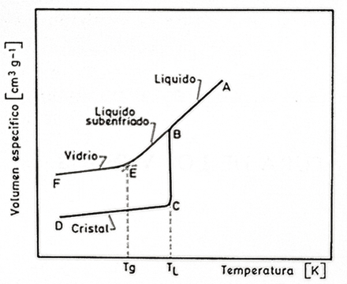

Los sólidos inorgánicos, en general, son cristalinos. En ese sentido, el vidrio es una excepción. Los sólidos cristalinos están constituidos por una estructura ordenada. Todos encajan por geometría en alguna de las 14 redes de Bravais, que se organizan en 7 sistemas cristalinos. Excepto los vidrios, que no mantienen ningún orden al variar la escala. Se puede llamar a los vidrios, líquidos de viscosidad infinita o líquidos sobre enfriados, ya que es como si fuesen líquidos a los que se hubiese hecho una foto y se hubiesen quedado las partículas congeladas en sus posiciones.

En la imagen se compara el cambio de volumen en un vidrio respecto a un cristal al bajar la temperatura. En el tramo A-B, cuando las sustancias son líquidas, el comportamiento es similar pero, a partir de B, vemos dos curvas diferentes. En B-C se representa el comportamiento normal de las sustancias cristalinas en la fusión. La temperatura de fusión se representa por Tl, ya que es la temperatura de liquidus, es decir, a esa temperatura coexiste la fase líquida con la cristalina. Cuando el enfriamiento es rápido puede ocurrir la curva B-E. Este es el caso de los vidrios. Alrededor de E hay un codo en el que cambia la pendiente. Esta zona de cambio de pendiente se conoce como zona de transformación, y se caracteriza por un notable aumento de la viscosidad. Aunque esta zona de transformación abarca un rango de temperaturas, suele asociarse con la temperatura Tg que resulta de cortar las líneas con distintas pendientes que vienen desde F y desde B.